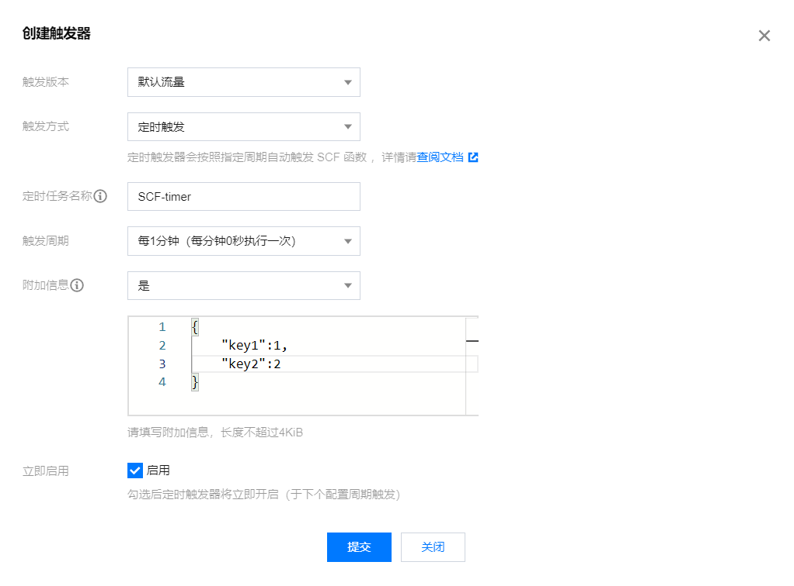

函数计算#
##本节目标
本讲的教学目标为：
了解什么是事件函数和触发器；
通过Input-Process-Output的模型了解触发器和事件函数之间的关系。
一、简述#
Python的基本函数包括三个部分：入参、函数本身和返回值，分别对应输入（input）、处理（process）和输出（output）。 定义一个基本函数后，会通过主程序去调用这个函数并输入参数，然后通过变量获取返回值。
函数计算的事件函数就对应着处理（process）这部分，而触发器就类似于在外部调用事件函数的主程序，既输入参数（input），又获取事件函数的返回值 （output）。
二、事件函数#
def Print():
print("Hello World!")
def main(event,context):
Print()
在第一讲中，函数被改造成了如上图所示，这是一个简单的事件函数。接下来我们把该函数修改成如下所示。
# -------index.py-------
def Print(a):
print(a)
def main(event,context):
a = event["key1"]
b = event["key2"]
Print(a + b)
return a + b
1. 执行方法#
执行方法是指调用事件函数的入口。在第一讲中，一般会把程序执行的起点函数，即主函数作为事件函数进行改造。
在如下图所示划红线地方，执行方法的输入格式是{主函数所在代码文件名}.{主函数名}。

假设函数文件名是index.py, 那么上面红线处应该输入index.main
2. 输入参数#
事件函数的输入参数是固定不变的，只有event和context，并且顺序不能被调换。
2.1 参数event#
event的数据类型是dict，作用是储存要被处理的输入数据。在事件函数中，通过类似键值对的方式调用要使用的数据。
以index.py的代码块为例，假设event的内容如下所示
{
"key1":1,
"key2":2
}
那么，控制台会输出以下内容：
3
2.2 参数context#
context参数是云函数平台提供的，可以获取当前运行的云函数的信息，目前不会用到context参数。
2.3 测试模板#
我们可以尝试用测试模板来改变输入的event和context参数。
点击新增测试模板，然后选择”Hello World事件模板“，给新增的测试模板取名后，enter。
这时工作目录下会出现一个json格式文件，我们在context一栏里面改好key1和key2的值：
{
"value": "test",
"text": "Hello World事件模板",
"context": {
"key1": 1,
"key2": 2
}
}
这样就OK了，我们重新部署云函数后，测试，得到如下结果：

3. 返回值#
事件函数的返回值，也就是return的内容，会以字典dict结构输出。但是能否被触发器捕捉到，取决于触发器的种类。
三、触发器#
在简述部分，已经介绍了触发器的作用。接下来会主要介绍两种触发器，定时触发器和API网关触发器。
1. 定时触发器#
定时触发器可以让你每隔一段固定时间，就执行一次云函数。
定时触发器的设置#
第一步：打开云函数控制台界面，在函数列表里单击需要配置触发器的云函数名称。然后，点击左栏的“触发管理”，就会显示如下界面。

第二步：点击“创建触发器”，在“创建触发器”弹窗中按照下图参数所示配置触发器，然后点击提交。

触发方式选择定时触发。
触发周期为了方便我们看到效果，这里选择每1分钟触发一次。
附加信息为是否需要传入额外的event信息，附加信息的内容将会封装成以下格式。 比如如果如上图所示，得到的event值则为：
{
"Type":"Timer",
"TriggerName":"EveryDay",
"Time":"2022-04-3T11:49:00Z",
"Message":"{"key1":1, "key2":2}"
}
注意，我们的附加信息会被转为字符串格式存储到”Message“中，因此，我们需要修改我们的函数代码为以下格式：
# -*- coding: utf8 -*-
import json
def Print(a):
print(a)
def main(event,context):
data = json.loads(event['Message'])
a = data["key1"]
b = data["key2"]
Print(a + b)
return a + b
做完之后，我们可以在日志查询模块看到我们的调用信息：

2. API网关触发器#
API网关触发器比起定时触发器更加复杂，但是可以以字典结构接收事件函数的返回值。
API网关触发器的设置#
第一步：打开“触发管理”，创建触发器。
第二步：按照下图参数所示配置触发器，然后点击提交。

触发版本：与云函数的版本控制有关，直接选择”版本：$LATEST“
触发方式：选择“API网关触发”
API服务：可以选择已经创建的已有API服务，也可选择新建API服务用于绑定云函数。本例选择新建API服务并命名
请求方法：是指API网关服务向云函数发起调用请求的方式，具体解释见触发器一章。本例使用”ANY“。
发布环境：是指发布API服务的环境，依使用者情况而定，有”测试“、”发布“和”预发布“三种选项。本例使用”发布“。
鉴权方法：是指API网关服务向云函数发送请求时的认证方式，有”免鉴权“（即无需认证）和”密钥对“两种方式。本例为方便测试，选择”免鉴权“。
集成响应：关系到云函数发送给触发器的返回值的数据格式。若启用，则会返回整个HTTP响应；若不启用，则只返回HTTP响应的Body部分内容。选择不启用。
Base64编码：若使用到二进制文件，则启用。这里关掉。
第三步：完成第二步后，触发管理界面就会多出一个触发器并显示其信息，如下图。

接下来我们需要改造我们的函数代码：
# -*- coding: utf8 -*-
import json
def main_handler(event, context):
data = json.loads(event['body'])
a = data['key1']
b = data['key2']
return(a + b)
这样一个云函数就配置成功了。接下来我们可以在本地进行调用。
3. 如何查看触发器的触发状况#
在本地pycharm新建项目，输入代码：
import requests
url = 'https://service-8xkljdv2-1256954489.gz.apigw.tencentcs.com/release/test_api'
data = {"key1":1, "key2":2}
r = requests.post(url=url, json=data)
print(r.text)
代码中的url地址为触发器管理中API网关的访问路径。在这里我们用post方法去向API网关发送Http请求， 将我们需要传入的参数data也封装在Http请求里面，得到结果如下：
3